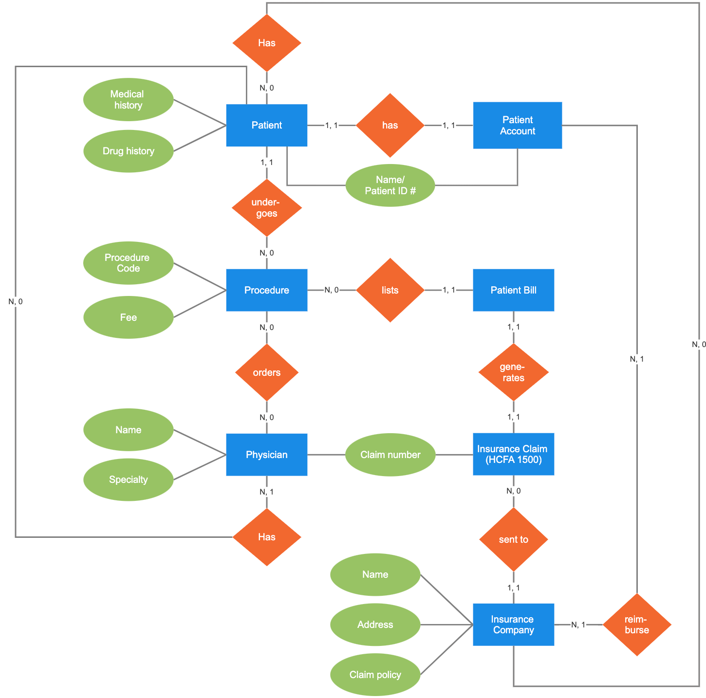
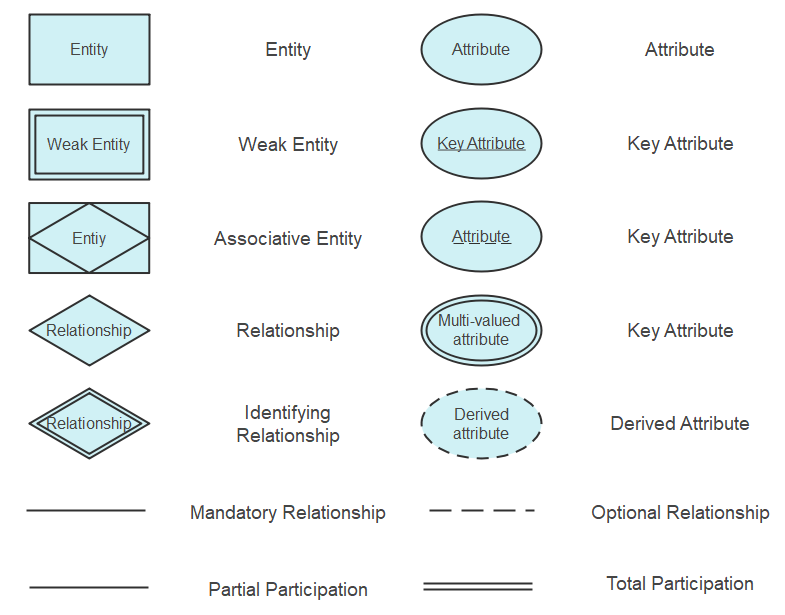

ERD
ERD sümbolid
ERD komponendid ja funktsioonid
Olemused (Entities):
- Olemused on reaalsed või kujuteldavad objektid, mida soovite andmebaasis jälgida.
- Iga olemus esindab konkreetset andmekogumit, millel on omadused või atribuudid.
- Näiteks võib klient olla üks olemus ja tal võivad olla atribuudid nagu nimi, aadress ja telefoninumber.
Atribuudid (Attributes):
- Atribuudid on omadused, mis kirjeldavad olemusi.
- Need on andmed, mida soovite iga olemuse kohta salvestada.
- Iga atribuudi jaoks on määratud andmetüüp (nt tekst, number, kuupäev jne).
- Näiteks klienti kirjeldavate atribuutide hulka võivad kuuluda eesnimi, perekonnanimi, telefoninumber jne.
Suhted (Relationships):
- Suhted kirjeldavad seoseid erinevate olemuste vahel.
- Need näitavad, kuidas üks olemus on seotud teisega.
- Suhted võivad olla üks-ühele, üks-palju või palju-palju.
- Näiteks võib klient olla seotud tellimusega, kus üks klient võib omada mitmeid tellimusi, moodustades seega üks-palju suhte.
Võtmed (Keys):
- Võtmed on atribuudid või atribuutide kombinatsioonid, mille abil saab üheselt tuvastada iga olemuse eksemplari.
- Primaarvõti (Primary Key) on ainulaadne võti, mida kasutatakse konkreetse olemuse eksemplari identifitseerimiseks.
- Võõrvõti (Foreign Key) on võti, mis loob seose kahe erineva olemuse vahel, määratledes suhte.
- Näiteks klientide tabelis võib kasutada klientide ID-d kui primaarvõtit ja tellimuste tabelis klientide ID-d kui võõrvõtit, et seostada iga tellimus konkreetse kliendiga.
Mudelid (Models):
- Mudelid on ERD-skeemid, mis näitavad olemuste, nende atribuutide ja suhete vahelisi seoseid.
- Need annavad ülevaate andmebaasi struktuurist ja aitavad arendajatel mõista, kuidas erinevad andmekogumid omavahel seotud on.
- Mudelid võivad olla kõrgtasemelised (nt kontseptuaalsed mudelid) või detailsemad (nt füüsilised mudelid, mis kirjeldavad konkreetse andmebaasi struktuuri).
Kardinaalsus (Cardinality):
- Kardinaalsus määratleb suhte entiteedi paari vahel, näidates, kui palju seotud objekte võib iga entiteet omada.
- Funktsioon: Kirjeldab suhte omadusi ja määratleb, kui mitu entiteedi ühest poolest saab seotud olla teise poolega.
Diagrammi sümbolid
ERD kasutusviisid
Andmebaasi kavandamisel kasutatakse ER-diagramme seotud andmebaaside kavandamiseks ja nõuete määramiseks. Need aitavad selgitada loogikat ja ärireegleid ning rakendada sobivat tehnoloogiat.
Andmebaasi tõrkeotsingul kasutatakse ER-diagramme olemasolevate andmebaaside analüüsimiseks ja probleemide lahendamiseks.
Äriinfosüsteemides kasutatakse diagramme äriprotsessides kasutatavate andmebaaside kavandamiseks või analüüsimiseks. See võib aidata protsesse optimeerida ja parandada info kättesaadavust.
Äriprotsesside ümberkujundamisel (BPR) aitavad ER-diagrammid analüüsida äriprotsesside ümberkujundamisel kasutatavaid andmebaase ja uue andmebaasi seadistuse modelleerimisel.
Hariduses aitavad ER-diagrammid planeerida andmebaase hariduslikel eesmärkidel, võimaldades struktureeritud teabe salvestamist ja taastamist.
Teadustöös mängivad ER-diagrammid võtmerolli kasulike andmebaaside seadistamisel, mis aitavad analüüsida struktureeritud teadusandmeid.
ERD ajalugu
Peter Chen, tuntud ka kui Peter Pin-Shan Chen, oli Carnegie-Melloni Ülikooli õppejõud Pittsburghis, kes arendas välja ER-mudeli andmebaasi kavandamise jaoks 1970. aastatel. Kuigi andmete omavahelise seotuse kujutamine ulatub tagasi antiik-Kreekasse, kus seda mainiti Aristotelese, Sokratese ja Platoni töödes, ning hiljem nähti seda 19. ja 20. sajandi filosoofia-loogikute nagu Charles Sanders Peirce'i ja Gottlob Frege'i töödes, oli Peter Chen see, kes tõi selle idee praktilisse rakendusse andmebaasi kavandamisel. 1970. aastatel töötasid Charles Bachman ja A.P.G. Brown tihedalt koos Peter Cheni lähenemise eelkäijatega. Bachman arendas välja andmestruktuuri diagrammi tüübi, mida tuntakse Bachman Diagrammina ja mis sai nime tema järgi.
Lisad